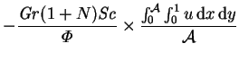
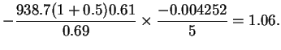

The overall energy transfer rates may be calculated from (2.66) or
by averaging the
horizontal component of the total energy flux (2.47) over any
vertical line segment joining the floor and the ceiling (since these
boundaries are adiabatic). The latter is chosen here
as a test of the overall conservation of energy and the
accuracy of the postprocessing operations involved in the calculation
of  .
Results are presented for averages over the left
wall, the right wall and the total domain in Table 5.2.
.
Results are presented for averages over the left
wall, the right wall and the total domain in Table 5.2.
The postprocessing for the mass transfer is similar to that for the
energy transfer. The details are omitted, though the overall
transfer rate can be inferred from equation
(2.62) and table 5.1:
|  | |||
|  | (5.6) |
The closeness of the average transfer rates to unity is indicative of both the aptness of the scales chosen in §2.3.4 and the low degree of convective enhancement with the present parameter values.